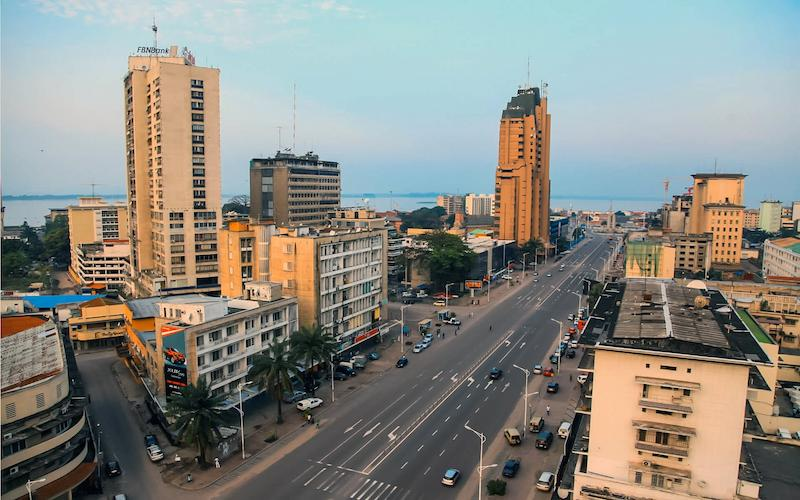

Our Destinations
KIJ Mobility currently focuses on providing motorcycle transportation within Kinshasa. As the business grows, we plan to expand our transportation services to other cities and regions of the Democratic Republic of Congo.
Current Destination
Kinshasa

Kinshasa is the starting point for KIJ Mobility. Our initial motorcycle transportation service is designed to help customers travel conveniently within the city.
Future Destinations
As KIJ Mobility develops, we hope to expand beyond Kinshasa and connect customers with other cities and regions across the Democratic Republic of Congo.
Kongo Central
Kongo Central is one of the regions that could be included in our future expansion.
Kwilu
We may also expand transportation services toward Kwilu and other nearby regions in the future.
Other Cities and Regions
Our long-term vision is to develop transportation connections between Kinshasa and other parts of the Democratic Republic of Congo.
Plan Your Ride
Need transportation within Kinshasa? Submit a ride request to get started.
Request a Ride